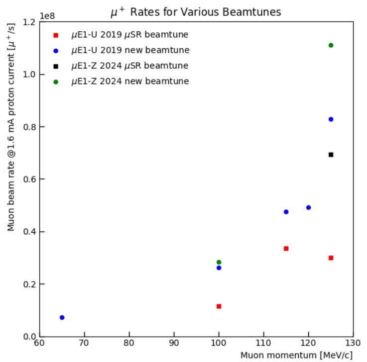
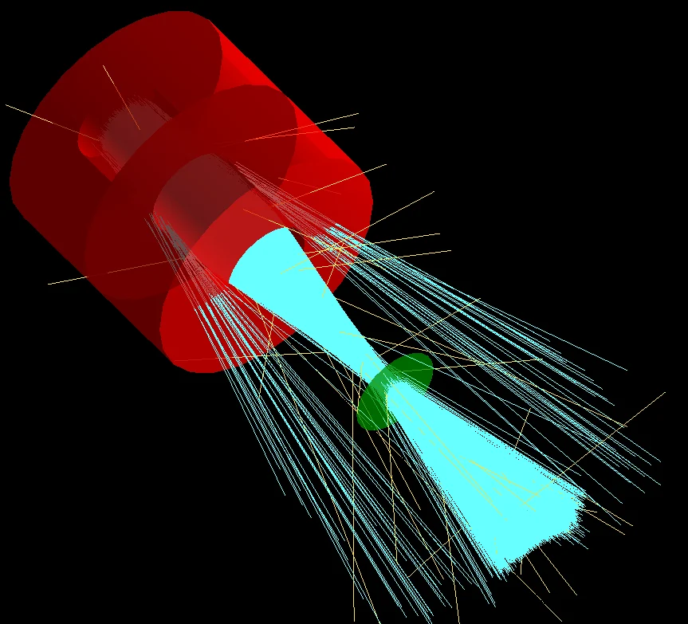

Master's thesis · Paul Scherrer Institute · 2024–2025
Measuring the 6D phase space of the µE1 muon beam
Phase II of muEDM needs a high-rate beam of 125 MeV/c muons. I helped measure what the µE1 beamline at PSI actually delivers in its Z-configuration, and built simulations that reproduce it.
Why it matters
The statistical sensitivity of a frozen-spin EDM search improves with the number of muons stored and with their momentum. Phase II of muEDM plans to use muons of about 125 MeV/c from the µE1 beamline. Earlier characterisations of µE1 covered its U-configuration. In the Z-configuration, the last bending magnet (ASK82) bends the beam the opposite way, which promises higher rates and lower energy dispersion, but it had not been measured.
A model of the beamline is only as good as the beam put into it. Measuring the full phase space at the end of the line is the first step towards propagating it backwards and optimising the beam for the experiment.
What I did
- Beamtime, June 2024. A week-long measurement campaign at µE1 with the PSI muEDM group. I took part in the setup, alignment and data taking.
- Hardware. I designed the holders for the scintillator-cross trigger (SciCross) and the LaBr₃ calorimeter in Onshape and had them 3D printed. They mount on an XYZ table so the detector can be moved across the beam.
- Detectors and DAQ. A 21 × 21 scintillating-fibre grid (SciFi) measured beam profiles. SciCross plus LaBr₃, in 5-point coincidence, measured energy. Everything was read out through PSI's WaveDAQ.
- Measurements. Quadrupole scans of the final doublet (QSK810/811), Z scans, time-of-flight vs energy, and position–momentum slicing for dispersion. These covered 100 and 125 MeV/c muons from backward pion decay and 140 MeV/c muons from forward decay.
- Analysis. I extracted the beam matrix and Twiss parameters, rates, momentum spread and dispersion for each tune, using C++/ROOT and Python.
- Modelling. I reproduced the measurements in three independent codes: TRANSPORT, XSuite (symplectic single-particle tracking) and G4beamline (Geant4-based).
Results
Transverse phase space of the 125 MeV/c beam
Show as table
| Parameter | Horizontal | Vertical |
|---|---|---|
| α | 0.0384 ± 0.0029 | −0.6219 ± 0.0167 |
| β [m/rad] | 0.1920 ± 0.0189 | 0.8420 ± 0.0444 |
| γ [rad/m] | 5.2165 ± 0.0167 | 1.6470 ± 0.0040 |
| ε [mm·mrad] | 920.3 ± 45.4 | 213.2 ± 8.1 |
Emittance at 125 MeV/c, Z vs U configuration (mm·mrad)
Show as table
| Tune · plane | Z 2024 | U 2019 |
|---|---|---|
| New · x | 920.3 ± 45.4 | 946 |
| New · y | 213.2 ± 8.1 | 716 |
| µSR · x | 860.8 ± 20.7 | 995 |
| µSR · y | 194.4 ± 5.9 | 331 |
Muon rate by beam tune

Outcome. The 125 MeV/c "new" tune in the Z-configuration combines the highest rate with the lowest emittances, so I recommended it as the leading candidate for muEDM Phase II. Its emittances (920 and 213 mm·mrad) are the Phase II beam parameters quoted in the collaboration's 2025 design paper, EPJ C 85, 622.
Simulation: three codes, one beam
Starting from the phase space measured upstream of the final quadrupole doublet, I propagated the beam to the SciFi detector in each code and compared the result with the measurement.
XSuite vs measurement, 125 MeV/c new tune
| Quantity | Measured | XSuite |
|---|---|---|
| √σxx [mm] | 13.30 ± 1.04 | 13.30 |
| √σθθ [mrad] | 69.29 ± 2.43 | 69.34 |
| ρxθ | −0.038 ± 0.008 | −0.037 |
| √σyy [mm] | 13.39 ± 0.62 | 13.39 |
| √σφφ [mrad] | 18.74 ± 0.51 | 18.74 |
| ρyφ | 0.528 ± 0.024 | 0.529 |
G4beamline: muons through the final doublet

Open questions I flagged
- Vertical dispersion. At 100 MeV/c the beam shows non-zero vertical energy dispersion, although µE1 never bends vertically. The most likely source is the upstream pion-decay solenoid twisting the beam. This needs dedicated measurements, because it feeds directly into Phase II systematics.
- Missing correlations. Dipole scans are needed to measure the angle–momentum terms (σθδ, σφδ), and magnet hysteresis was not yet quantified.
- Full-beamline model. The back-propagation works for the final doublet. Extending it through the whole line, where modelling the ASK bending magnets is the main hurdle, would let the beam be optimised offline for Phase II.
Evidence
- Thesis: Characterization of the 6D Phase Space of a Muon Beam for the Measurement of the Muon Electric Dipole Moment, IISER Pune (2025). Supervisor: Dr. Philipp Schmidt-Wellenburg, PSI. Full text in the IISER Pune repository ↗
- Talk: "MuE1 Characterisation Z-configuration for the muEDM Experiment", muEDM Collaboration Meeting, PSI, December 2024.
- Paper using these beam parameters: A. Adelmann et al., EPJ C 85, 622 (2025) · arXiv:2501.18979
- Simulation code (TRANSPORT, XSuite, G4beamline) is in the muEDM collaboration GitLab.
Figures and numbers are from my thesis unless stated otherwise.